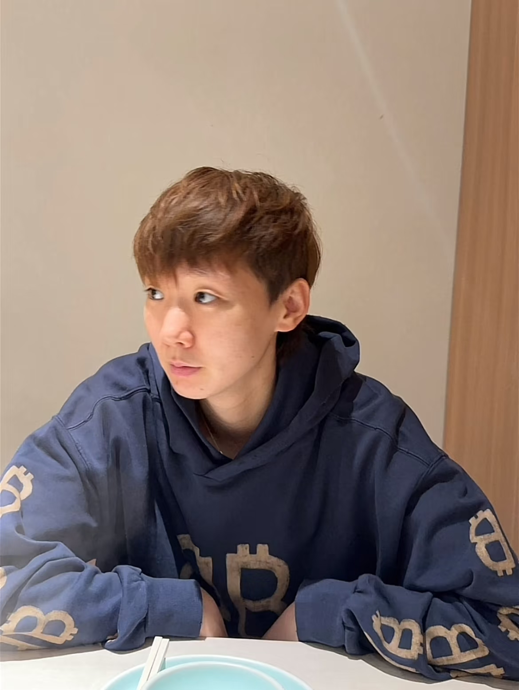

"曼"长征途，终获硕果；笔耕不辍，载"昱"前行。
在学术与创作的道路上，每一份高质量成果的刊发，都是日积月累的沉淀与孜孜不倦的求索。
近日，我院学子王曼昱凭借扎实的专业能力与深刻的创作思考，其优秀作品成功刊发于国际期刊《Houston World》，用实力展现了青年学子的学术风采与钻研精神，成为身边人前行的榜样。
本期榜样引路人专题，我们对话优秀作者王曼昱，一同探寻她背后的创作历程，聆听她深耕钻研的故事，感受青年学者逐梦前行的热忱与力量。

📷 王曼昱学姐生活照▲ 王曼昱学姐生活照
1. 恭喜学姐的论文成功见刊《Houston World》，可以简单和我们分享一下这次研究的整体经历吗？
王曼昱：开始做这个项目时我给自己的定位肯定是去冲去拼顶刊，但其实投稿环节我还是有些保守，在纠结之下都是求稳的感觉更多。我收到录用通知的那天确实非常高兴，同时确实有一种如释重负的感觉，在梦想多年的期刊正式发表后，那种感觉是我既想到过又没有想到过的。
2. 恭喜学姐完成了一直以来的梦想。你当初是如何确定这篇文章的研究方向的？选题时就对顶刊有很直接的渴望吗？
王曼昱：对，就是觉得我要去成为最强的这个人。这种想法让我在实验和写作里感受到的紧张和压力都没有那么沉重了。以前我好像每天把自己闷在一个小世界里，压力很大，这一次我反而学会了一心向目标前进，享受过程，全力以赴就好。
3. 这次发表对你来说意味着什么？未来有什么新的规划？
王曼昱：这是我第一次在影响力这么大的期刊上发表论文，能够完成一直以来的梦想对我来说意义非凡，我还记得接到录用通知是21年11月的最后一天，可以说211130也成了我生命中一个很重要的数字。确实是很美好的一次经历，很感谢所有帮助过我的人，感谢支持我的人。目前还是研究生阶段，有了这次经验以后希望未来能有更多更深入的产出。
4. 有时候也会有遗憾，学姐能跟我们分享你在这次经历中有什么感觉"不完美"的地方吗？
王曼昱：其实这次还有和我一位师兄一起做的一个相关的项目，也认真准备了一段时间，但是这次因为一些出国交流的安排，我们的成果没能顺利上线。错过了一个比较重要的会议，也是比较可惜吧，希望后续还有机会再去完善。
5. 在获得了如此成就之后，学姐给自己定的下一个目标是什么？
王曼昱：现在问起来的话，研一阶段嘛，我长远和长期的目标肯定是希望未来能有更多更深入的成果，会奔着这个目标一直努力。近期目标我可能会说做好每一个手头的实验，或者是做好2022年的最重要的项目申报和创新比赛吧。
6. 最后一个问题，学姐能给我们说一句鼓舞的话吗？
王曼昱：战胜困难要比一帆风顺更踏实一些，再出发，再努力！
▲ 王曼昱学姐接受采访现场
一纸期刊成果，见证深耕笃行；一席倾心交谈，传递榜样力量。
王曼昱凭借不懈的努力与执着的追求，在专业领域斩获亮眼成绩，成功在高水平期刊发表作品，用实际行动诠释了青年学子的担当与实力，也让211130成为了她人生中重要的数字。
愿我们以榜样为帆，以热爱为桨，在求学路上脚踏实地、锐意进取，书写属于青年一代的精彩篇章，绽放属于自己的光芒。